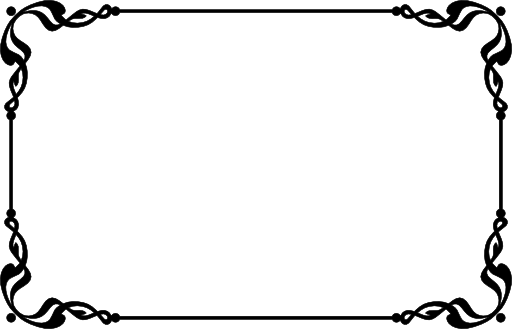

<!DOCTYPE html>
<html lang="en">

<head>
    <meta charset="UTF-8">
    <meta name="viewport" content="width=device-width, initial-scale=1.0">
    <title>Document</title>
    <style>
        img {
            height: 300px;
            width: 450px;
            filter: blur(20px);
            /* filter: brightness(50%);  => set darkness on image*/
            /* filter: contrast(50%); => set gray color on image  */
            /* filter: drop-shadow(5px 5px 5px red); => apply on png image  */
            /* filter: grayscale(50%); => apply black & white effect */
            /* filter: hue-rotate(30deg); */
            /* filter: invert(50%); => apply like flashback      */
            /* filter: opacity(0.5); */
            /* filter: saturate(50%); => apply black & white effect  */
            /* filter: sepia(50%); => set yellowness  */
        }
    </style>
</head>

<body>
    
    <!--  -->
</body>

</html>